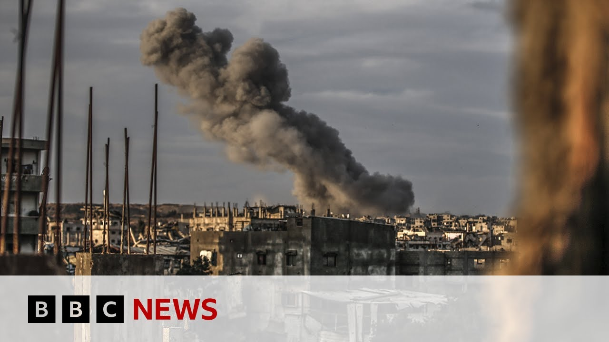

【以色列在加沙发动大规模进攻 | BBC新闻】
Summary: Summary: Israel has allowed limited food aid into Gaza after US pressure, but ongoing deadly strikes and ground operations continue, with hospitals reporting over 100 deaths in 24 hours. The UN criticizes the aid as insufficient, while Netanyahu faces international backlash. Military operations intensify, targeting northern Gaza and displacing civilians south.
摘要： 总结: 以色列在美国施压下允许少量食物援助进入加沙，但持续的空袭和地面行动已导致医院报告24小时内超100人死亡。联合国批评援助杯水车薪，内塔尼亚胡面临国际压力。军事行动升级，针对加沙北部并迫使平民南迁。

⏱️ Estimated Reading Time: 5 min
Let's turn to the Middle East because Israel says it will allow a limited amount of food into Gaza, ending a 78-day blockade.
我们将目光转向中东，因为以色列表示将允许少量食物进入加沙，结束长达78天的封锁。
The decision comes after pressure from the United States.
这一决定是在美国的施压下做出的。
Further Israeli ground operations have also taken place today across Gaza with deadly air strikes continuing.
以色列今天还在加沙各地展开进一步地面行动，致命空袭持续。
Hospitals say at least 100 people, including dozens of children, have been killed in the last 24 hours.
医院称过去24小时内至少有100人死亡，包括数十名儿童。
Let's go to the border between southern Israel and Gaza.
现在我们前往以色列南部与加沙的边境。
Our Middle East correspondent Wura Davis is there and we're just in the last few moments the Israeli military has said five trucks carrying aid have entered Gaza but of course as the UN chief also saying that is simply a drop in the ocean.
我们的中东记者乌拉·戴维斯在现场，以军方刚刚表示五辆援助卡车已进入加沙，但联合国秘书长称这只是杯水车薪。
Yeah, I mean five trucks carrying aid there apparently baby food and other vital aid.
是的，五辆卡车运送的似乎是婴儿食品和其他关键物资。
It is a drop in the ocean.
这简直是沧海一粟。
Uh a UN spokeswoman told me this morning that 5 to 600 trucks a day would be needed to even start to alleviate and address the problems of malnutrition and shortages that Gaza's 2.1 million people face.
联合国发言人今早告诉我，每天需要500至600辆卡车才能缓解加沙210万人面临的营养不良和物资短缺问题。
So I think they'll be apart from laughing this is a very serious matter.
因此，我认为他们绝非在开玩笑，这是非常严峻的问题。
Five trucks are going to make absolutely no difference at all.
五辆卡车根本无济于事。
Uh the UN has already hit back today saying that much more aid is needed uh and that must be facilitated via the existing UN staff and various UN bodies because that is the only way this aid is going to make a difference.
联合国今日已回击称需要更多援助，且必须通过现有联合国人员和机构协调，否则援助无法见效。
Earlier today we heard from the Israeli Prime Minister Benjamin Netanyahu.
今天早些时候，以色列总理内塔尼亚胡发表讲话。
He admitted that Israel has been widely criticized even by its closest ally the United States.
他承认以色列甚至遭到最亲密盟友美国的广泛批评。
Uh, Israel was warned not to cross a red line and allow starvation to be a big problem in Gaza, but if if Mitt Netanyahu's answer is to allow as small as five trucks a day in, then I don't think he can expect there not to be any more criticism.
以色列被警告不要越过红线，任由加沙陷入饥荒，但如果内塔尼亚胡的回应仅是每天允许五辆卡车进入，他别指望能避免更多批评。
So perhaps Israel is intending to to ramp this up over coming days, but this is a very very small answer to what Gaza's overwhelming needs are and it won't satisfy his allies internationally.
或许以色列打算在未来几天增加援助，但这与加沙的迫切需求相比微不足道，也无法让国际盟友满意。
That's for sure.
这是肯定的。
We're bringing up to date in terms of the military operation.
我们继续关注军事行动的最新进展。
We've been seeing for a number of days now.
过去几天我们一直在目睹。
[Music]
[音乐]
Yeah, you can probably hear in the distance uh you we've been hearing and seeing all day the impact of Israeli artillery and air strikes on Gaza, much of northern Gaza behind me.
是的，你们可能听到远处传来的声音，我们一整天都在目睹以军炮火和空袭对加沙的影响，我身后大部分是加沙北部。
Uh Bet Hanoon, Gaza City, Jabalia, they've all been hit relentlessly throughout the day.
拜特哈农、加沙城、杰巴利耶全天遭猛烈袭击。
You can hear sometime or you can see sometimes the the smoke in the distance as those buildings are hit.
你们偶尔能听到或看到远处建筑被击中冒出的浓烟。
What you can also see are the the trails of dust as Israeli armor moves towards Gaza City.
还能看到以军装甲部队向加沙城推进扬起的尘土。
Uh this is the start or the continuation if you like of Operation Gideon's chariots.
这是“基甸战车行动”的开始或延续。
It's Israel again according to Benjamin Netanyahu occupying the whole of Gaza.
内塔尼亚胡称以色列将再次占领整个加沙。
Uh they're going to defeat Hamas completely.
他们将彻底击败哈马斯。
That is the Israeli military aim.
这是以色列的军事目标。
And a big and controversial part of that plan is to move much of Gaza's population, hundreds of thousands of people southwards towards uh relocation centers in the south.
该计划最具争议的部分是将加沙数十万人口南迁至安置中心。
But that uh military operation very much underway as we speak.
但这一军事行动此刻正在进行。
Wor Davis there on the border.
边境的乌拉·戴维斯报道。
Thanks very much indeed for the
非常感谢。